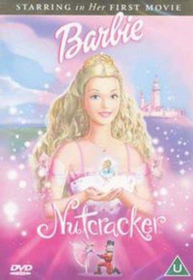

IMDB-Wertung: 6.3 / 10
IMDB-Wertung: 6.3 / 10  Metascore:
Metascore: 
Barbie shows that if you are kind, clever and brave, anything is possible in this tale of Clara and her amazing Nutcracker, who set off on an adventure to find the Sugarplum Princess.
Alternativ: Barbie in the Nutcracker
 IMDB-Wertung: 6.3 / 10 Metascore:
Barbie shows that if you are kind, clever and brave, anything is possible in this tale of Clara and her amazing Nutcracker, who set off on an adventure to find the Sugarplum Princess.
Jahr: 2001
Dauer: 76 Minuten
FSK: 0
Land: USA Studio: Artisan EntertainmentTonspuren:
Untertitel:
Auflösung: SD (608x336) Größe: 697 MB
Genre: Animation/Trick, Familie, Musical, Liebe
Regisseur: Owen Hurley
Drehbuch: Linda Engelsiepen, Ruth Handler, Hilary Hinkle, E.T.A. Hoffmann, Rob Hudnut
Soundtrack:
Darsteller:
 Kirby Morrow als Nutcracker / Prince Eric
Kirby Morrow als Nutcracker / Prince Eric Tim Curry als Mouse King
Tim Curry als Mouse King Peter Kelamis als Pimm
Peter Kelamis als Pimm Cathy Weseluck als Maid
Cathy Weseluck als Maid Kelly Sheridan als Barbie / Clara
Kelly Sheridan als Barbie / Clara Kathleen Barr als Aunt Drosselmayer / Owl
Kathleen Barr als Aunt Drosselmayer / OwlDatei: X:\Kinder Collections\Barbie\Barbie 01 in Der Nußknacker (2001, FSKo.Al., 608x336).avi seit 12.03.2015
Festplatte: Kinder-Filme+Trick
 Es gibt insgesamt 40 Filme in der Gruppe 'Kinder Collections\Barbie'
Es gibt insgesamt 40 Filme in der Gruppe 'Kinder Collections\Barbie'